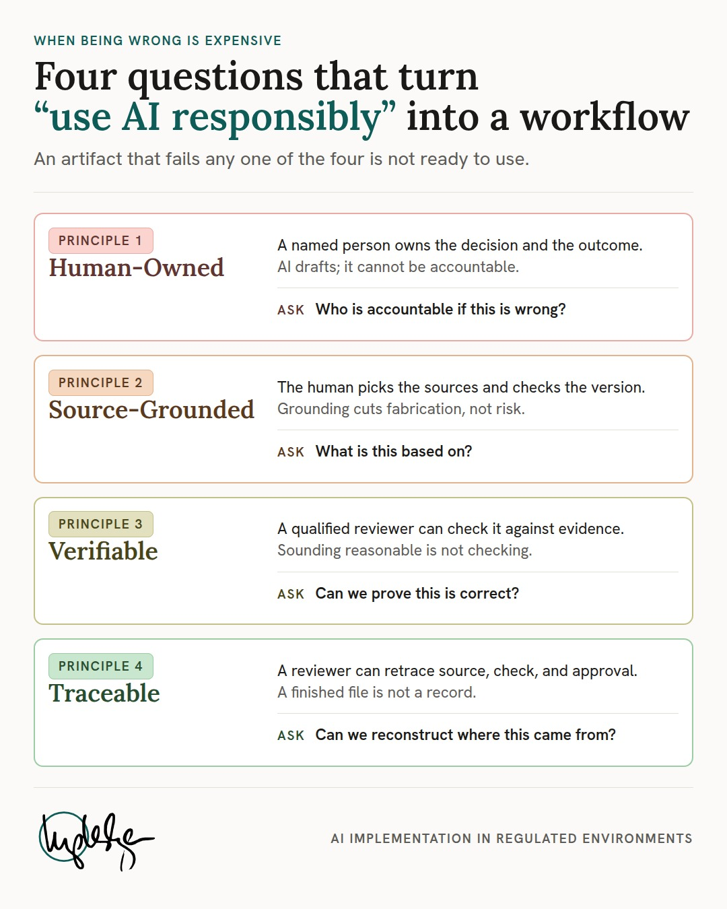
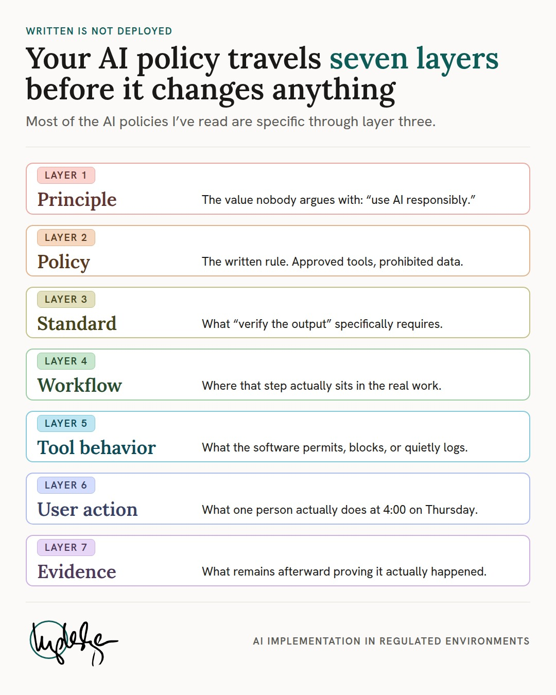
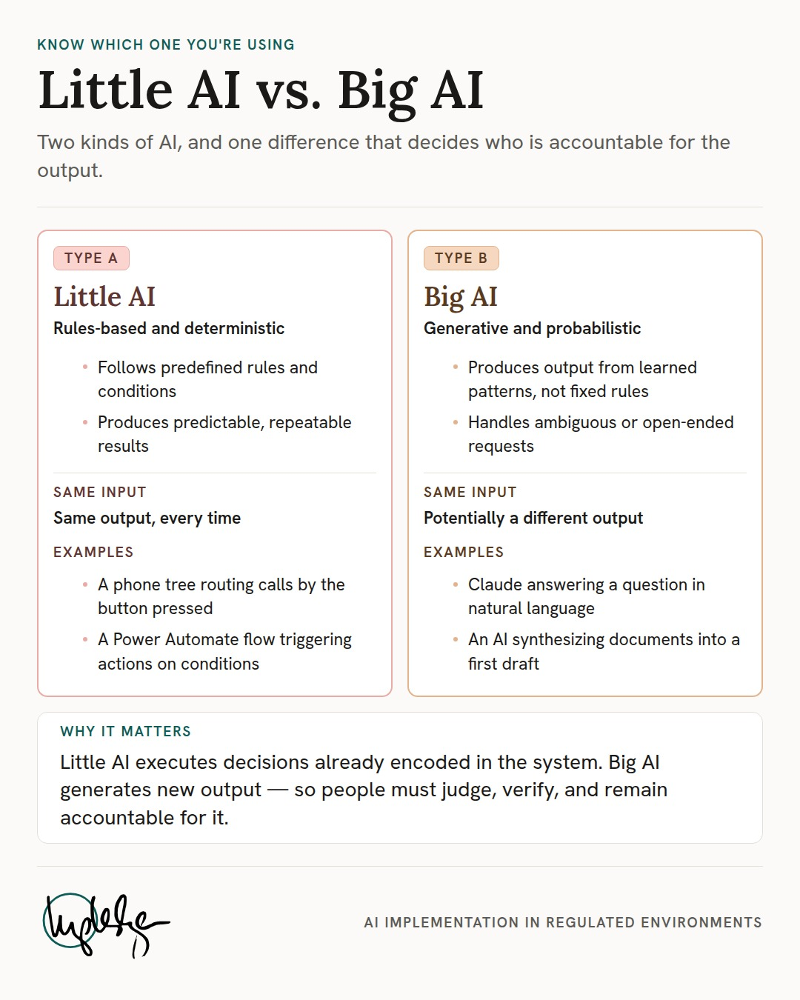

A layer-3 consumer format. Portrait 4:5, sized for a social feed and for printing to US Letter from the same source. Three examples ship as working references.
prefers-color-scheme, so the canvas picks one register and hardcodes it. The series
stays in light — a graphic that switches register mid-series stops reading as a series.



| Canvas | 1080×1350 (4:5). Exports JPG q92, plus a US Letter PDF. |
| Register | Light (§4.2), pinned for the whole series. |
| Layout | A — stack (rows scale to content; 4 and 7 are both proven), or a
two-column peer comparison. The latter is not one of the three layouts in
§6 — little-ai-big-ai declares it in its own README. Check that file before
assuming the spec covers a layout. |
| Slots | --data-1 onward, in order (§4.3). Never
skip or reorder to get a hue you prefer — the numbering is the contract. |
| Card mode | Neutral (§4.4) — the chip carries the tint, not the card. |
| Word budget | 120–180 (§7.4). Both examples come in under it. |
| Footer | logo_long.svg, the black mark — light canvas. |
Authority: docs/infographic-design-system.md. Working sources:
examples/four-principles/, examples/policy-to-practice/ and
examples/little-ai-big-ai/ — copy a directory and swap the content rather than
starting from a blank canvas. All three pin the light register; the series stays in it.